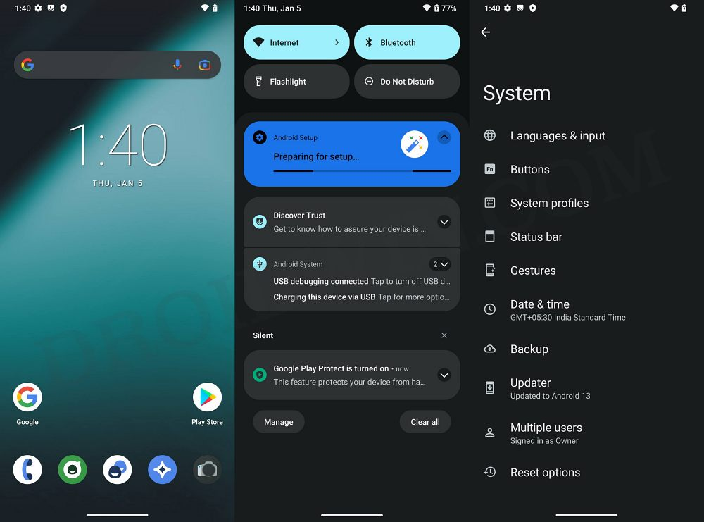

AOSP (Android Open Source Project) es una iniciativa de código abierto liderada por Google para desarrollar y mantener el sistema operativo Android. AOSP es la versión "pura" de Android, sin las personalizaciones y modificaciones que los fabricantes de dispositivos suelen agregar a sus versiones de Android.
AOSP tiene una apariencia visual similar a la de otras versiones de Android, con una pantalla de inicio, una barra de notificaciones y un menú de aplicaciones. Sin embargo, la apariencia exacta puede variar según la versión de Android y el dispositivo en el que se ejecute.
AOSP se enfoca en la eficiencia y el rendimiento, lo que significa que puede ser más rápido y consumir menos recursos que las versiones personalizadas de Android. Esto se debe en parte a la falta de bloatware y características adicionales que a menudo se agregan a las versiones personalizadas de Android.
AOSP es altamente personalizable, lo que significa que los desarrolladores y usuarios avanzados pueden modificar y personalizar el sistema operativo para satisfacer sus necesidades. Esto se debe en parte al hecho de que AOSP es de código abierto, lo que significa que el código fuente está disponible para que cualquiera lo modifique y lo distribuya.